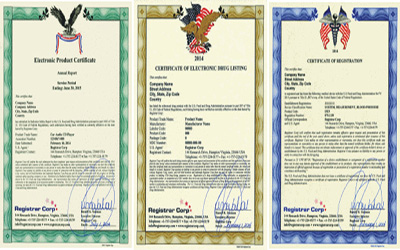
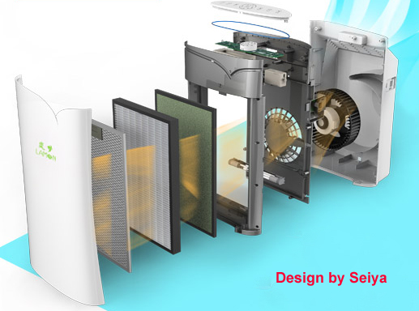

光觸媒加工(設計.合作)步驟
1. 依客戶所需(討論用途.目標價);使用環境條件,其抗菌或抗污效 除臭....等不同功能是否可行
2. 依被加工材料或元件.選用最佳之光觸媒原料及最佳節省原料之加工法,
3. 產品或模組使用光學設計,使其充份發揮其效果
4. 其它(專利.安規.效能驗證...等)
世屋光觸媒加工自2002年從日本引進台灣,已具有近20年之加工技術與經驗,並榮獲政府研發補助及英國發明大賞
以窄義而言,並沒有所謂之醫療級光觸媒,以泛義而言,醫療及光觸媒此名詞只有在台灣及日本使用,舉例來說許多光觸媒口罩宣稱FDA之認證,並不是以光觸媒為主,而是口罩其本身過濾能力,通過FDA 510K認證,因此務必要讓消費者了解,免得混淆,但其加工在口罩上配合銀離子等抗菌材,是比一般口罩抗菌來的高及安全是不可否認.
FDA醫材其定義為：符合以下條件的儀器、裝置、工具、機具、器具、插入管、體外試劑或其他相關物品，包括組件、零件或附見等。
1、明列於國家處方集（NF）或美國藥典（USP）或前述二者的附件中者。
2、意圖使用於動物或人類疾病或其他身體狀況的診斷；或用於疾病之治癒、減緩、治療者。
3、意圖影響動物或人類身體的功能或結構，但不經由動物或人類身體或身體上的化 學反應來達成其首要目的，同時也不依賴新陳代謝來達成其主要目的。

光觸媒材料部份原材料是FDA認可可添加在食品添加劑內,或是可用於化妝品內,FDA在除菌功能上是可被認證,而台灣部份,則不需要環保署認證,但其廣告受到廣告法約束,不得使用"殺菌滅菌"字義.只可使用抗菌除菌字義.
舉例來說,以上述三種都是FDA所頒發認證,但其內容是非常不同的.左側為電器品.中間為藥品,右邊為醫材類用品,因此消費者必需了解所購買的產品到底是取得哪種認證

本公司研開發符合FDA電氣用空氣清淨機寫真
1. 依客戶所需(討論用途.目標價);使用環境條件,其抗菌或抗污效 除臭....等不同功能是否可行
2. 依被加工材料或元件.選用最佳之光觸媒原料及最佳節省原料之加工法,
3. 產品或模組使用光學設計,使其充份發揮其效果
4. 其它(專利.安規.效能驗證...等)
世屋光觸媒加工自2002年從日本引進台灣,已具有近20年之加工技術與經驗,並榮獲政府研發補助及英國發明大賞